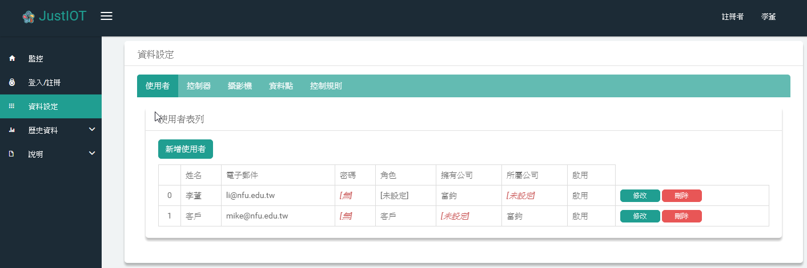
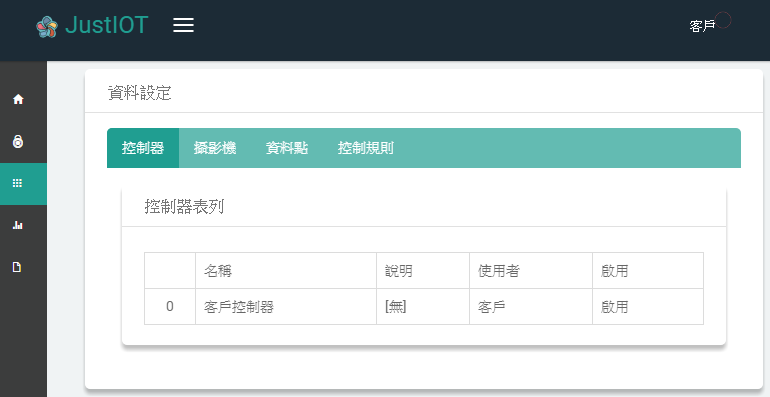

使用說明
JustIOT平台架構
JustIOT以Firebase的即時資料庫為基礎， 控制器的資料傳送,手機監控,及網頁Web-based監控,都是直接連上Firebase資料庫。
對於資源比較弱的控制器，如Arduino，無法執行SSL加密運算的，透過智能伺服器資料轉送，其與智能伺服器的資料傳輸採MQTT協定。
資料結構
JustIOT監控平台的資料結構有使用者，廠商，控制器，資料點，攝影機，及控制規則等。
使用者要將其物聯網應用系統連上JustIOT監控平台，必須先在系統上註冊，然後，設定相關控制器及資料點相關資訊，才可上線。
為簡化相關設定，採MQTT協定上線者，註冊後，以特定格式傳送資料者，系統自動為其設定基礎的控制器及資料點資料．見Arduino控制器連線說明。
使用者


3.廠商
當使用者的物聯網應用系統發展成熟時，可申請成為廠商，提供對外客戶服務。
廠商的帳號由系統管理者設定。
4.客戶
客戶的所有資料，包括帳號，控制器，攝影機，資料點，控制法則等，由其廠商管理。
客戶可登入系統遠端監控（手機或瀏覽器）。
5.系統管理者
控制器
任何控制器，如果能收送資料到本平台的Firebase資料庫，即可掛上本平台，有手機及Web-based遠端監控及智慧控制功能。
目前控制器掛上本平台的方式有兩種:MQTT協定連線及Firebase SDK連線。
MQTT連線
MQTT連線是一種發佈/訂閱式的通訊協定(publish-subscribe-based)；登入MQTT伺服器後，可以發佈訊息到某個主題，也可以訂閱某個主題。 將訊息發佈到某個主題時，訂閱該主題的所有用戶，都會收到該訊息。
在JustIOT系統上使用其MQTT服務連上平台，必須：
- 利用帳號（email)/密碼登入。
- 傳送控制器資料點配置資料。
格式:[控制器名稱] [資料點名稱 資料類型] [資料點名稱 資料類型] ...
如: "訪客控制器 濕度 2 溫度 2 亮度 2 LED 1 氣氛燈 3" (這個例子5個資料點) ;
其中，資料類型: 0:數位輸入 1:數位輸出 2:類比輸入 3:類比輸出
- 傳送資料點數值到'data'主題。
格式:[帳號] [控制器名稱] [資料1] [資料2] ...
如: guest@gmail.com 訪客控制器 58.00 28.00 283 0 100
- 訂閱接收主題([控制器名稱]+[帳號])，以執行平台來的指令。
平台指令:驅動[編號]資料點為[數值].
格式:set [編號] [數值] [指令識別碼]
如: set 3 1 -Kec66JPGTVwUaK5XFTF (如果是數位輸出, 1表示ON, 0表示OFF)
指令執行結果回報到'data'主題
成功格式: set ok [指令識別碼]
失敗格式: set err [指令識別碼]